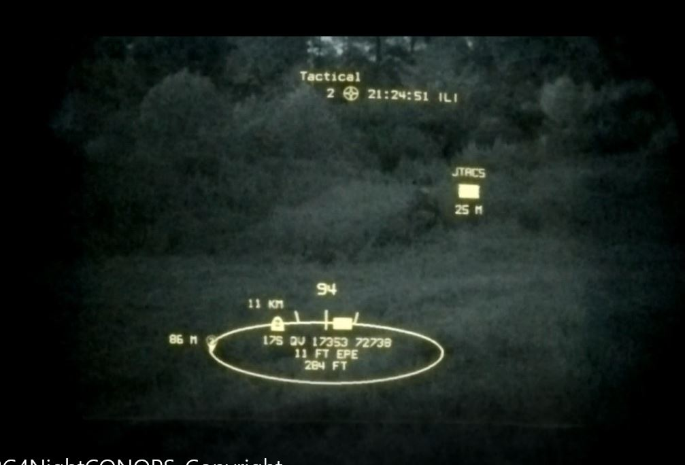
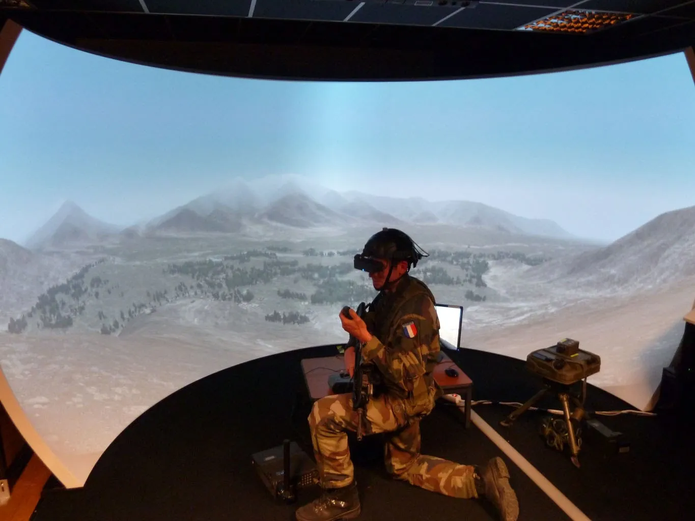

Сфери використання VR та AR
Віртуальна та доповнена реальність знаходять застосування в широкому спектрі галузей, змінюючи способи роботи, навчання та розваг.
1. AR та VR у військовій техніці
Поширення у збройних силах провідних країнах світу різноманітних тактичних засобів доповненої реальності робить актуальним завдання стандартизації відповідної технології візуалізації та протоколів передачі даних. Технологія ARC4 дозволяє невеликим підрозділам виконувати свої місії з високою обізнаністю про оточення, з підвищеною безпекою та швидкістю та в тісній координації з членами команди. Замість того, щоб дивитися вниз на карту та накладати її, орієнтуючи її на правду перед собою, ARC4 розміщує інформацію з ATAK, удень чи вночі, у вашому полі зору. Ваша голова в бойовому просторі, де їй і місце. Подивіться на область, і ви побачите плаваючі піктограми над цілями, товариськими матчами, маршрутами, маршрутними точками тощо в полі зору, і вони відстежують 360 градусів, коли ви скануєте горизонт. Ця система COTS об’єднує GPS, акселерометр, гіроскоп, магнітометр, датчик барометричного тиску, а також камеру EO. Вихід здійснюється через Day HUD або кліпон для системи візуального доповнення, включаючи ECOTI/ECOSI від Optics1.
Військова сфера — тренування пілотів, водіїв, операторів, підрозділів з імітацією збройних сутичок тощо (наприклад, симулятор Virtual Battlespace), відтворення історичних бойових ситуацій. На картинці солдат, що тренується на пристрої віртуальної реальності
 2. VR у освіті, мистецтві, та науці.
- Моделювання складної чи небезпечної діяльності, наприклад, керування транспортом, хірургічних операцій
- VR може допомогти художникам та кураторам створити виставки з залученням одночасно як константної реальності, так і віртуальної.
- візуалізація внутрішньої будови об'єктів, молекулярних і атомних структур. Зокрема в медицині віртуальна реальність забезпечує дистанційне і точне керування інструментами
3. Розваги з AR та VR
Найбільші приклади використання новітніх технологій у сфері розваг:
- VR ігри здобули великої популярності. Хоч вони не такі дешеві, але вони провели фурор у світі ігор, так як можна мольберт для розробників став більшим у тисячі разів, а пристрої стають все новішими. Наприклад Half Life Alyx, що перевернула ігровий світ.